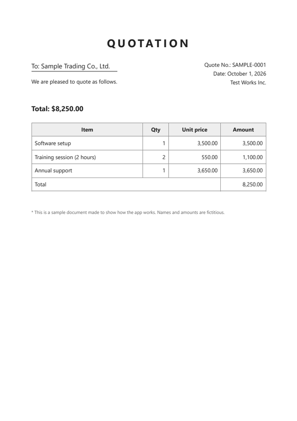
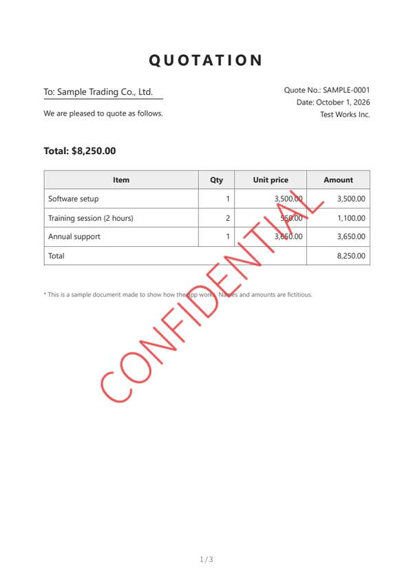
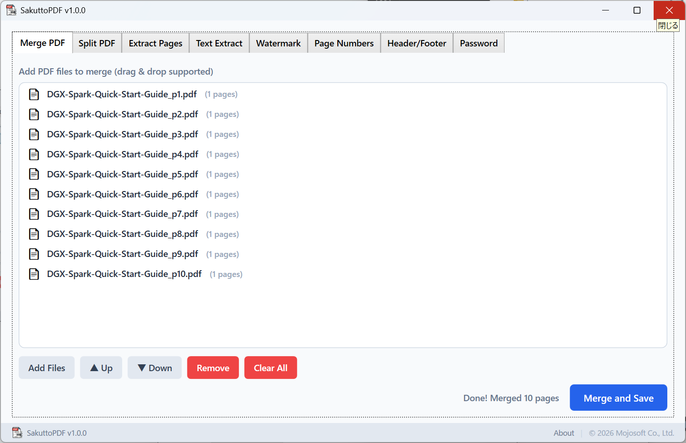
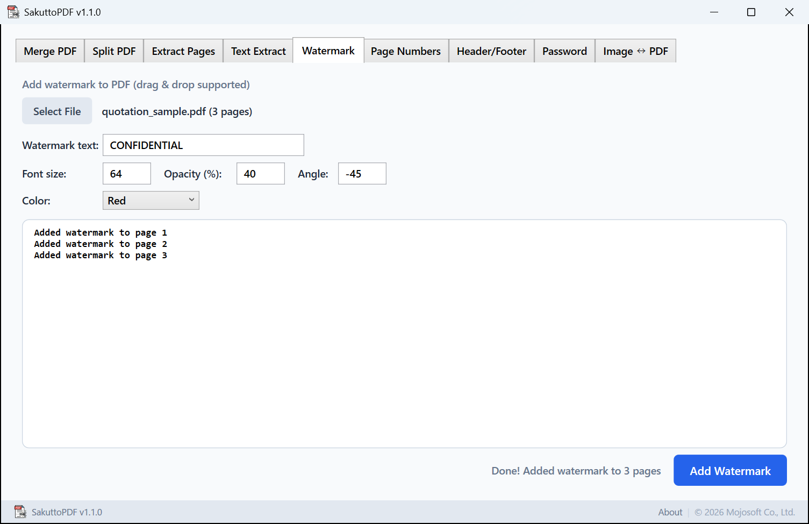
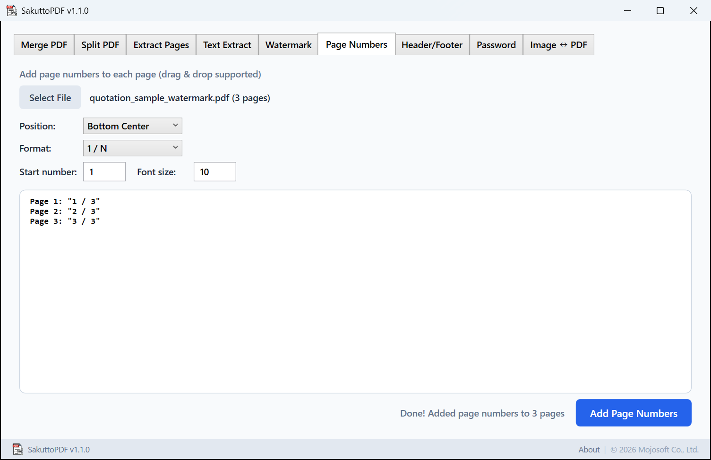

v1.1.0
- New "Image ↔ PDF" tab
- PDF → Image: export pages as PNG / JPEG (72 / 150 / 300 dpi, page range)
- Image → PDF: combine multiple images into one PDF (image size / A4 portrait / A4 landscape)
Merge, split and extract pages; add watermarks, page numbers and headers; set passwords; convert to and from images. Nothing is uploaded to a website — everything runs on your PC.


Both are the same PDF, before and after processing. All 3 pages get the same treatment.
A sample quotation (3 pages, fictitious names and amounts) processed with Sakutto PDF v1.1.0. Watermark: CONFIDENTIAL, red, font size 64, opacity 40%, angle −45°. The app screens are under "How it works" below.
Buy it on the Microsoft Store and start right away. No sign-up for the app.
FirstAdd your PDFs
Pick the tab for the job and drag and drop your PDFs. Merge takes as many files as you like, and Up / Down sets the order.

NextChoose the result
Set the watermark text, color, size and angle, the position and format of page numbers, the pages to split out, and so on.

ThenSave
Choose a name and folder and you're done. The suggested name ends with "_watermark", "_numbered" and so on, so the original stays separate.

Nine everyday tasks — just switch tabs.
Combine, divide, or keep just the pages you need.
Put text such as CONFIDENTIAL on every page.
Add numbers, dates or a title to every page.
Set a password to open the file, and one for editing.
Turn pages into images, and images into a PDF.
Save the text of a PDF as a text file.
Get the PDFs you have ready to hand over.
A watermark shows how to handle the file, and a password limits who can open it — without uploading it anywhere.
Merge several PDFs into one and add "1 / N" page numbers — for meetings and submissions.
Fit many photos onto A4 pages and save them as a single PDF.
Extract pages such as "1-5, 10", or split the file page by page.
Unlike online PDF tools, nothing is uploaded anywhere.
No PDFs or file names are ever sent to the developer (Mojosoft). No account, no usage tracking. See the Privacy Policy for details.
| Input | PDF Image → PDF: PNGJPEGBMPGIFTIFFText extraction works on PDFs that contain text (it cannot read text from scanned, image-only PDFs). |
|---|---|
| Output | PDF (merge, split, extract, watermark, page numbers, header/footer, password, image → PDF) Text (.txt) Images: PNG or JPEG (72, 150 or 300 dpi) |
| Location & names | You choose the name and folder each time you save (the suggested name ends with "_watermark", "_numbered" and so on). Split files and exported images go into the folder you choose. |
| App language | English and Japanese (follows your Windows language setting) |
| Requirements | Windows 10 (version 2004) or later, 64-bit |
Yes. In the Watermark tab, set the text, size, opacity, angle and color (gray, red or blue), and it is added to every page.
Yes. Add them to Merge PDF, set the order with Up / Down, and save.
Yes. In Extract Pages, enter pages such as "1-5, 10, 15-20" and they are saved together as one PDF.
Yes. Set an open password, an owner password, or both, and choose whether to allow printing and copying.
Yes. Image ↔ PDF exports pages as PNG or JPEG at 72, 150 or 300 dpi.
Yes. Add them under Image → PDF and choose a page size such as A4 portrait; each photo is centered on its own A4 page.
Yes. All PDF processing happens on your PC.
Yes. Buy it once on the Microsoft Store and keep using it with no monthly fee.
The Microsoft Store version updates automatically.
Bug reports & feature requests
Report them on GitHub Issues.
Contact
Email: support@mojosoft.biz